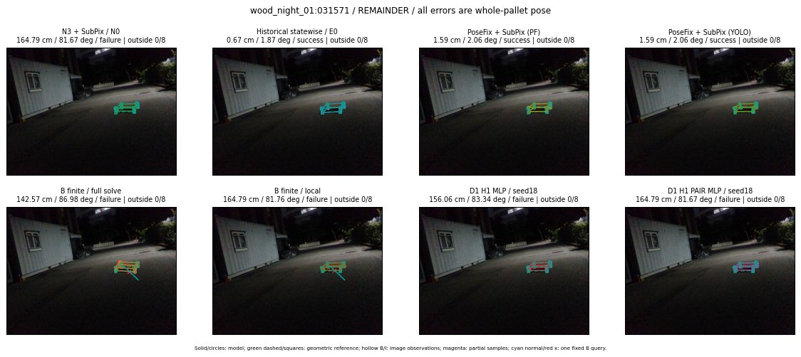

Whole-pallet pose errors; reference is a fixed geometric annotation, not certified physical GT.

Scores are uncalibrated logits. N0 retention is a numerical pose alias; it differs from H0 none or B fallback. B/I and profiles in baseline/B panels are original observations; L panels use new D1 observations. Only one deterministic supported B query is shown in a thumbnail; full support counts are below. Grey privacy rectangles edit the display copy only and are unrelated to O states; all observations were measured on original pixels. Thumbnails use JPEG quality85; detailed scientific panels are PNG.
| Method | Whole pose / cm, deg | Actual source | Selected ID | Score | Archived candidates | Eligible | N0 retained | H0 none | Fallback | Finite profiles |
|---|---|---|---|---|---|---|---|---|---|---|
| Raw YOLO + F | 4.45 cm / 3.19 deg / success | OTHER | None | N/A | N/A | N/A | False | N/A | None | N/A |
| N3 + SubPix / N0 | 164.79 cm / 81.67 deg / failure | N0 | None | N/A | N/A | N/A | True | N/A | None | N/A |
| Historical statewise / E0 | 0.67 cm / 1.87 deg / success | E0_REGENERATED | None | N/A | N/A | N/A | False | N/A | False | N/A |
| PoseFix raw | 6.22 cm / 1.75 deg / failure | OTHER | None | N/A | N/A | N/A | False | N/A | None | N/A |
| PoseFix + SubPix (PF) | 1.59 cm / 2.06 deg / success | OTHER | None | N/A | N/A | N/A | False | N/A | False | historical support records 9; finite audit N/A |
| PoseFix + SubPix (YOLO) | 1.59 cm / 2.06 deg / success | OTHER | None | N/A | N/A | N/A | False | N/A | False | historical support records 9; finite audit N/A |
| Historical L, seed18 | 164.79 cm / 81.67 deg / failure | N0 | N0 | N/A | 47 | 47 | True | True | True | N/A |
| Historical B fixed bank | 0.67 cm / 1.87 deg / success | OTHER | LOGGED/G10/SWAPPED_WD/outline_consider/17 | N/A | N/A | N/A | False | N/A | False | N/A |
| Historical B full | 140.87 cm / 87.32 deg / failure | OTHER | NEW/B/ORIGINAL_WD/h1/G10/ORIGINAL_WD/sample/7/PROPOSED_NATIVE_YAW_1 | N/A | N/A | N/A | False | N/A | False | N/A |
| Historical edge full | 47.86 cm / 6.17 deg / failure | OTHER | NEW/edge/SWAPPED_WD/h0/G10/SWAPPED_WD/sample/0/PROPOSED_NATIVE_YAW_0 | N/A | N/A | N/A | False | N/A | False | N/A |
| Historical AB full | 142.51 cm / 86.99 deg / failure | OTHER | NEW/AB/SWAPPED_WD/h1/G10/ORIGINAL_WD/sample/7/PROPOSED_NATIVE_YAW_1 | N/A | N/A | N/A | False | N/A | False | N/A |
| B finite / fixed bank | 0.67 cm / 1.87 deg / success | OTHER | LOGGED/G10/SWAPPED_WD/outline_consider/17 | N/A | N/A | N/A | False | N/A | False | 2/2 |
| B finite / full solve | 142.57 cm / 86.98 deg / failure | OTHER | NEW_FINITE/B/ORIGINAL_WD/h0/LOGGED/G10/ORIGINAL_WD/outline_consider/9/PROPOSED_NATIVE_YAW_0 | N/A | N/A | N/A | False | N/A | False | 2/2 |
| B finite / local | 164.79 cm / 81.76 deg / failure | OTHER | NEW_FINITE/B/ORIGINAL_WD/h0/N0_LOCAL_SAME_PHYSICAL_POSE/ORIGINAL_WD | N/A | N/A | N/A | False | N/A | False | 2/2 |
| Edge finite / full solve | 47.68 cm / 6.18 deg / failure | OTHER | NEW_FINITE/edge/SWAPPED_WD/h0/G10/SWAPPED_WD/sample/0/PROPOSED_NATIVE_YAW_0 | N/A | N/A | N/A | False | N/A | False | 2/2 |
| D0 H0 MLP / seed18 | 164.79 cm / 81.67 deg / failure | N0 | N0 | -0.5946856737136841 | 18 | 18 | True | True | True | N/A |
| D0 H0 MLP / seed19 | 164.79 cm / 81.67 deg / failure | N0 | N0 | 0.6332505941390991 | 18 | 18 | True | True | True | N/A |
| D0 H0 MLP / seed20 | 164.79 cm / 81.67 deg / failure | N0 | N0 | -0.8819056749343872 | 18 | 18 | True | True | True | N/A |
| D0 H1 MLP / seed18 | 156.06 cm / 83.34 deg / failure | OTHER | WD0/ORIGINAL_WD/selected | -4.919671058654785 | 18 | 18 | False | False | False | N/A |
| D0 H1 MLP / seed19 | 156.06 cm / 83.34 deg / failure | OTHER | WD0/ORIGINAL_WD/selected | -5.029063701629639 | 18 | 18 | False | False | False | N/A |
| D0 H1 MLP / seed20 | 156.06 cm / 83.34 deg / failure | OTHER | WD0/ORIGINAL_WD/selected | -5.180877685546875 | 18 | 18 | False | False | False | N/A |
| D1 H0 MLP / seed18 | 164.79 cm / 81.67 deg / failure | N0 | N0 | 4.421606540679932 | 18 | 18 | True | True | True | N/A |
| D1 H0 MLP / seed19 | 164.79 cm / 81.67 deg / failure | N0 | N0 | 4.326598167419434 | 18 | 18 | True | True | True | N/A |
| D1 H0 MLP / seed20 | 164.79 cm / 81.67 deg / failure | N0 | N0 | 3.9533767700195312 | 18 | 18 | True | True | True | N/A |
| D1 H1 MLP / seed18 | 156.06 cm / 83.34 deg / failure | OTHER | WD0/ORIGINAL_WD/selected | -1.6676656007766724 | 18 | 18 | False | False | False | N/A |
| D1 H1 MLP / seed19 | 156.06 cm / 83.34 deg / failure | OTHER | WD0/ORIGINAL_WD/selected | -1.7364997863769531 | 18 | 18 | False | False | False | N/A |
| D1 H1 MLP / seed20 | 156.06 cm / 83.34 deg / failure | OTHER | WD0/ORIGINAL_WD/selected | -1.4127178192138672 | 18 | 18 | False | False | False | N/A |
| D1 H1 ROLE AFFINE / seed18 | 164.79 cm / 81.67 deg / failure | N0 | N0 | -0.41508811712265015 | 18 | 18 | True | False | False | N/A |
| D1 H1 ROLE AFFINE / seed19 | 164.79 cm / 81.67 deg / failure | N0 | N0 | -0.38682568073272705 | 18 | 18 | True | False | False | N/A |
| D1 H1 ROLE AFFINE / seed20 | 164.79 cm / 81.67 deg / failure | N0 | N0 | -0.49485331773757935 | 18 | 18 | True | False | False | N/A |
| D1 H1 PAIR MLP / seed18 | 164.79 cm / 81.67 deg / failure | N0 | N0 | -1.43755304813385 | 18 | 2 | True | False | False | N/A |
| D1 H1 PAIR MLP / seed19 | 164.79 cm / 81.67 deg / failure | N0 | N0 | -1.7934064865112305 | 18 | 2 | True | False | False | N/A |
| D1 H1 PAIR MLP / seed20 | 164.79 cm / 81.67 deg / failure | N0 | N0 | -2.1536684036254883 | 18 | 2 | True | False | False | N/A |
| D1 H1 PAIR ROLE AFFINE / seed18 | 164.79 cm / 81.67 deg / failure | N0 | N0 | -0.458191841840744 | 18 | 2 | True | False | False | N/A |
| D1 H1 PAIR ROLE AFFINE / seed19 | 164.79 cm / 81.67 deg / failure | N0 | N0 | -1.1526265144348145 | 18 | 2 | True | False | False | N/A |
| D1 H1 PAIR ROLE AFFINE / seed20 | 164.79 cm / 81.67 deg / failure | N0 | N0 | -0.5591109991073608 | 18 | 2 | True | False | False | N/A |
| Regenerated common E0 | 0.67 cm / 1.87 deg / success | E0_REGENERATED | E0_REGENERATED | N/A | N/A | N/A | False | N/A | False | N/A |